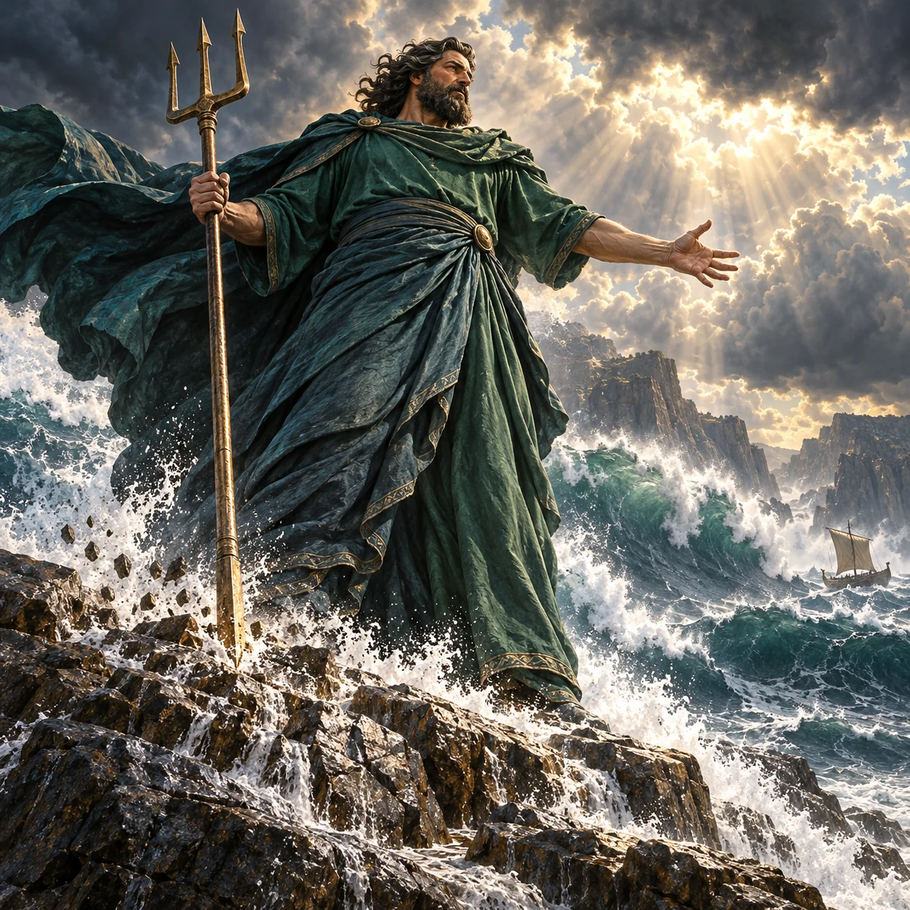

Poseidon

Mature dark-haired bearded human Poseidon commanding a stormy sea and striking coastal rock with his three-pronged trident.
Aura: Source-grounded sea storm and waves (poseidon-c06,c17) plus trident-struck fractured stone (c15,c35). Natural cloud-opening sunlight; no lightning or magical energy.
Audit ciri dan sumber
- [object Object]
- [object Object]
- [object Object]
- [object Object]
Main agent viewed native PNG directly: one mature dark-haired bearded Poseidon, two coherent visible arms; one holds a trident with exactly three tines and its shaft contacts coastal rock. Opaque green tunic/drapery covers torso and lower body; legs and feet concealed. Huge waves, spray and gathering storm clouds express sea-storm powers c06/c17, with small loose rock fragments near the shaft illustrating ground-striking/rock-shattering c15/c35. No lightning, fish tail, text, watermark, extra arms, nudity or gore. Rock fracture itself is subtle under spray; small boat is an artistic scale cue.
Review sumberUse case: stylized-concept. Create ONE original square premium naturalistic painterly Mythics illustration of POSEIDON, living Olympian sovereign of sea and storms, monumental awe-inspiring authority. Extreme low-angle full-body view from wet coastal rocks: the mature bearded DARK-HAIRED god towers above a violent sea, a tiny distant unmanned ancient boat and cliffs emphasizing immense scale. ONE human head, TWO natural eyes, exactly TWO arms and TWO human legs, no fish tail. Powerful mature dignified human face and dark flowing beard. Fully OPAQUE modest ancient Greek attire: a high-neck deep sea-green woven TUNIC covers chest, shoulders and abdomen, and an opaque long wrapped himation covers waist and both legs; storm-blown heavy cloak, entirely clothed, never bare-chested. One hand firmly grips a long plain bronze THREE-PRONGED TRIDENT with exactly three tines; its bottom point strikes the rock at his feet. The other empty hand stretches authoritatively toward the ocean. Show accepted documented powers clearly: immense grey-green ocean waves rear behind him under gathering dark STORM CLOUDS, wind drives white spray; physical coastal stone cracks outward from the trident impact, loose rock fragments and seawater foam, with NO glowing fissures, lava or magic beams. He commands storm, sea and earthquake by the trident. Breaks in clouds pour warm majestic natural daylight over his face, dark beard and drapery, giving respectful radiant presence rather than a monster. Rich cinematic depth, strong silhouette, tactile painterly wet rocks, salt spray, woven fabric and bronze; epic divine scale not ordinary human portrait. No lightning, supernatural fire, blue energy, coral mutations, fish appendages, additional weapons, horses or other creatures. No nudity, transparency, gore, victims, text, inscriptions, logos, border or watermark. Original design with no film, game, anime or comic imitation.